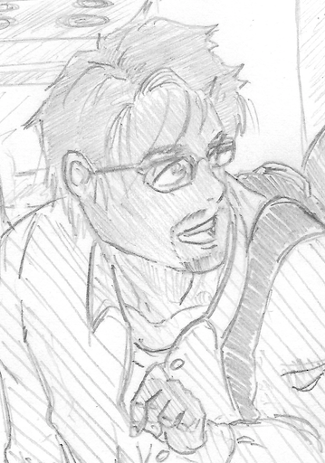
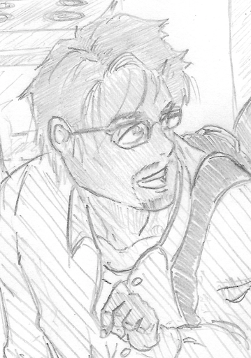
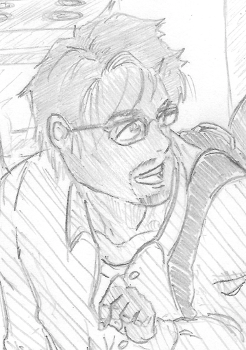

Kushin Mukherjee

I'm a first year Psychology PhD student at the University of Wisconsin, Madison. My primary interest is in the nature of visual concepts. How are they learned? Why are they useful? Can machines be taught these concepts? I study drawings as a means to answer these questions. I'm affiliated with the Knowledge and Concepts Lab, Schloss Visual Reasoning Lab, Austerweil Lab, and the Wisconsin Institute for Discovery.
I grew up in Calcutta, India, a bustling city with hot summers and torrential monsoons. Noticing a distinct lack of snow in my climate collection, I moved to upstate New York, where I received my AB in Cognitive Science and Japanese from Vassar College. While at Vassar, I was advised by Ken Livingston and Josh de Leeuw. I also spent a summer at the Computation and Cognition Lab at Stanford University as a CSLI intern, working with Judy Fan and Robert Hawkins. I also like reading Japanese manga and sketching in my free time. You can see my sketches here